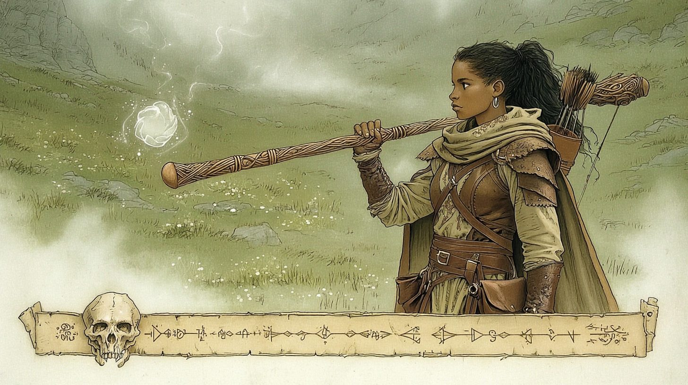
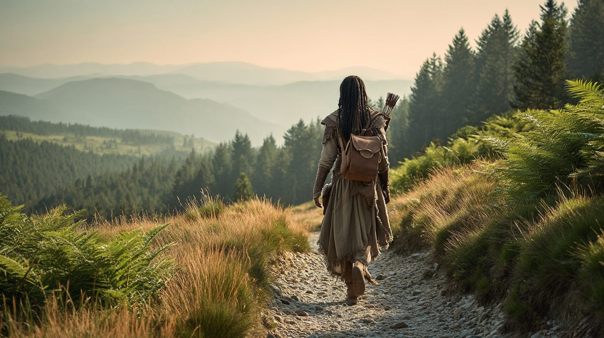

Kafiri av Ineni
Kallad Kafi. Kallad Dörröppnaren. Med rätta på båda.

Det första jag ägde var en nyckel till en dörr jag aldrig hittat.
Jag grävde upp den ur sanden som barn, ur något som en gång varit en kista eller en människa. Det gick inte längre att säga vilket. Mitt folk äger ingenting som låses. Tält har inga dörrar. En nyckel var det främmande tinget framför alla andra, ett löfte om ett rum jag inte fick gå in i, och jag kunde inte sluta tänka på det. De äldste kallade det rastlöshet. Magikerna i Krilloan kallade det senare talang. Jag är inte längre säker på att de menade olika saker.
Vi var nomader. Vi rörde oss ständigt, men i cirklar, över samma marker, mot samma brunnar, år efter år. Alla andra tycktes nöjda med det. Jag ville veta vad som fanns bortom de ställen vi alltid vände vid.
Så jag gick till Krilloan, till Ordo Magus, och lät dem lära mig grunderna. Jag lärde mig att rita cirklar. Jag lärde mig att kalla på Javas. Jag var duktig, det var aldrig problemet. Problemet var att Ordo älskar dörrar som öppnas långsamt, i rätt ordning, med tillstånd. Och jag har aldrig haft tålamod med ett lås när jag redan ser gångjärnen. Ingen körde ut mig. Jag bara slutade vara där.
Tillbaka ut i öknen, där jag hörde hemma, på jakt efter namn. Det är vad högmagi är, syvende och sist: att veta vad något egentligen heter. Jag fann Murrs höga namn inristat på en bronsspade under sanden, lämnad av någon glömd kult av begravare. Murr gräver. Murr gnolar. Murr bär upp småsaker ur jorden och räcker mig dem som gåvor, en knapp, ett mynt, en tand. Av allt jag har bundit är han den enda jag håller av.
Sedan läste jag om den döde kungen. Jag följde ledtrådarna ner i gravvalvet, jag tydde hans sanna namn av väggen, och jag uttalade det utan att veta säkert att jag hade rätt. Vad gör man? Jag hade ett namn och en grav full av mörker, och jag chansade. Det var rätt. Jag kom ut med livet, en åkallan rikare och en fiende rikare. Nemheb-Ka hatar mig med ett rent, tålmodigt, outtröttligt hat, och en dag glömmer jag ett ord och då är vi ensamma, han och jag.
En dörr för många öppnade jag in i Grå hallarna. Där, i det grå, mötte jag en kåpklädd vandrare som kände mitt namn. Inte mitt sanna namn, det hade han aldrig fått, men Kafiri, det jag kallar mig. Han erbjöd mig vägen ut. Jag visste precis vad en sådan gåva brukar kosta. Vad gör man? Han kunde inte tvinga mig, bara fresta, så valet var mitt och jag tog det. Priset var en dörr. En dag ska jag öppna en åt honom. Vilken, och när, säger han inte.
Jag kom ut i Arkand, vågornas och flammornas stad vid Masevabukten. En hamnstad i fem kvarter, med Sanna eldens tempel högt uppe på Drakklippan och gränder nog att tappa bort sig i. Långt från öknen, och långt från den döda skog jag till slut skulle nå. Längre norrut än jag någonsin tänkt mig.
Där fanns andra på väg åt samma håll, och jag följde med. Vägen därifrån, in mot väster genom Trollskogen och vildmarken, var lång och allt annat än stillsam. Men den är en annan historia. Det räcker att säga att jag lärde känna mitt sällskap väl. Milos självkärlek, Pips orubbliga sägner om dräpta drakar och välta titaner, Folke som såg allt och Brago som log över alltihop. Kanske lärde jag känna dem för väl.
Resten är ännu inte skrivet.
Jag bär fortfarande nyckeln. Jag vet fortfarande inte vad den öppnar. Och någonstans väntar en man i kåpa på den dörr jag är skyldig honom. Två lås, alltså. Det ena vill jag öppna. Det andra vågar jag inte. Vi får se vilket som ger sig först.
